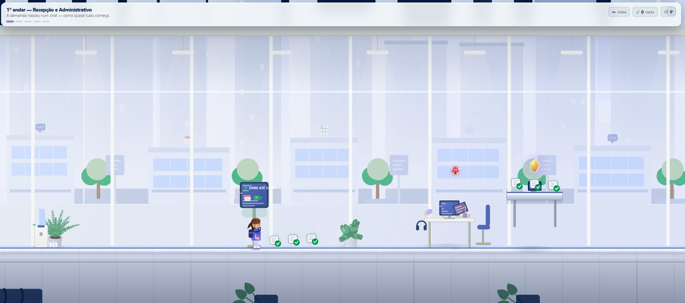

Em Legal Corporate, numa proptech, uso IA para tirar o trabalho repetitivo do caminho do jurídico: agentes que consultam bases, rotinas que resumem conversas, demandas organizadas e processos mapeados.
Jogo educativo · Claude Code
O Labirinto

Teclado: setas ou WASD. No celular, controles na tela.
Um jogo de plataforma para ensinar a quem pede ajuda ao jurídico qual é o canal certo para cada demanda. São cinco fases, e a personagem precisa entregar um legal assessment atravessando a vida corporativa, com o poder do foco para não ser atingida. A primeira fase está liberada aqui.
Emails bumeranguePilhas de papelMicrofone no mudoPoder do foco
Oficinas de IA
83 pessoas do jurídico em três turmas
Legal Corporate Brasil8 pessoas · 1h30
Legal Corporate Latam5 pessoas · 1h
Jurídico inteiro70 pessoas · 30 min
Depois das oficinas vieram conversas individuais com quem quis entender como construí as páginas em HTML, e retorno de quem aplicou as dicas de economia de tokens.
Agente de IA
Procurações que respondem perguntas
As procurações ficavam em uma pasta do Drive, sem mapeamento. Organizei o tema em três etapas:
MapeamentoInventário de toda a base existente.
ProcessoFluxo definido para emissão e controle.
AgenteResponde dúvidas consultando a base diretamente.
Automação · Google Chat
A semana do jurídico em uma newsletter
Toda sexta, um script lê o space mais movimentado do jurídico e entrega um resumo organizado por assunto, com o link de cada conversa.
Resumo da semanasexta-feira
thread
thread
thread
Gestão de demandas · Jira e Rovo
90%+
das demandas do time já entram pelo Jira
Automações no Rovo fazem a triagem de cada ticket e dão a ele um título padronizado, fácil de achar. Em paralelo, estou aprendendo gestão de projetos na prática, com a fila do time como campo de treino.
Mapeio processos a partir do task inventory: levanto as tarefas reais de quem executa e uso IA para chegar ao fluxo. O Bizagi saiu do meu caminho.
Trajetória
Mais de dez anos de direito. Os últimos cinco no direito público e em contratações, agora no jurídico corporativo de uma empresa de tecnologia.
2026 até hoje
Legal Analyst, Legal Corporate
Proptech, desde agosto de 2026
Contratos corporativos, M&A, governança de IA e centralização das demandas jurídicas. Construo com Claude e Claude Code as ferramentas que o time usa e ensino o jurídico a fazer o mesmo.
2021 a 2026
Analista de Licitações e Contratos, Pregoeira e Presidente da CPL
SENAR-RS, entidade do Sistema S
Do planejamento da contratação à fiscalização do contrato, sob o regulamento próprio de licitações da entidade.
Portal de Contratos no Fluig, com dados do RM Totvs: mais de 1.000 contratos e 15 gestores em um só lugar.
Mapeamento BPMN de todos os processos da entidade, convertido em normas internas.
Mais de 40 lotes por ano conduzidos como pregoeira.
Assistente com IA que guia os demandantes na elaboração de SMS e Termo de Referência.
Antes
Advocacia e consultoria em licitações
GAZEN Advogados, E3 Licitações e LICIJUR
Projetos próprios
Solvo e VOZ
Solvo, serviço de pareceres jurídicos sob demanda, com site, identidade e metodologia construídos com IA. VOZ, projeto de desenvolvimento de mulheres no jiu-jitsu. Sou faixa preta, com doze anos de prática.
Formação
Direito, direito público e comunicação na base. Agora, M&A. Em volta, mais de mil horas de cursos, com inteligência artificial e contratações no centro.
Conclusão prevista em maio de 2027
Pós-graduação em M&A
Galícia Educação
2021
Pós-graduação em Comunicação em Redes Sociais
FADERGS
2016
Especialização em Direito Público
FMP/RS
2013
Bacharelado em Direito
PUCRS
Formação complementar
61 cursos, mais de 1.000 horas, 24 instituições.
Vamos conversar.
Sobre IA no jurídico, contratos, processos ou uma ferramenta que ainda não existe no seu time.